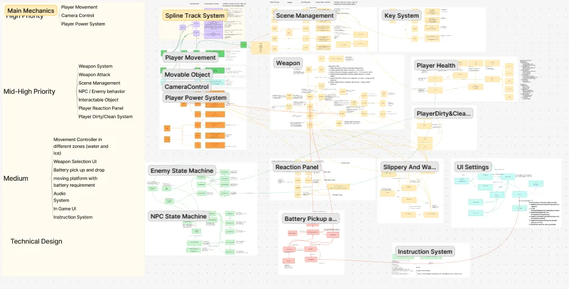

Selected work / Remains
Remains
Play as a small robot that wakes up in a forest after the end of the world. Explore to find out what happened, and use a foam gun and a vacuum to collect replacement parts for yourself.
- Role
- Only programmer, technical lead
- Team
- With a game designer, artist and level designer
- Duration
- 3 months, Scrum
- Released
- PC, on Steam

Gameplay video. Open on YouTube
What I did
- Planned the technical design: system flowcharts and a design document the whole team could read.
- Designed all of the gameplay mechanics and wrote all of the game's code.
- Built the opening cinematic with Timeline, the main menu and the tutorial scene.
- Implemented every UI element in the project.
- Ran the GitHub repository, reviewed pull requests and kept the main branch stable.
Seventeen systems, built to be reused
I was the only team member who knew Unity, so the codebase had to be easy for others to use and easy for me to change. I followed clean C# practice and the SOLID principles, and kept each system small and focused.
Key gameplay objects became prefabs. Our level designer, who had never used Unity, built Level 1 by placing and configuring them, a bit like playing a construction game.
- Movement
- Spline-locked 2.5D runner, rotation stabilisation, airflow and slippery zones, water zones.
- Tools
- Sticky foam gun that creates platforms, vacuum, weapon selection UI.
- AI
- State machines for enemies and NPCs.
- World
- Battery pickups, player power, dirt and cleaning, fuse boxes, key-locked levels, reaction panels.
- Flow
- Game progress and save/load, scene management, tutorial prompts and interaction triggers, camera control.
Spline-locked movement
The robot moves through a 3D world on a fixed path, like a side-scroller that can curve. A Rigidbody gives it real collisions and jumps, while its position along the path is tracked as a single value t.
The work is split across three components. SplineTracker converts speed into distance along the spline, SplineObjectMover moves the Rigidbody to that point and reports whether it succeeded, and SplineRunnerRB reads input and decides what to do. Each part has one job.
void FixedUpdate()
{
if (!_splineTracker.IsValid()) return;
_grounded = IsGrounded();
float control = _grounded ? 1f : Mathf.Clamp01(airControl);
HandleSplineMovement(control);
HandleJump();
UpdateOrientationWithStabilization();
UpdateVisualEffects();
UpdateMovementSound();
}
private void HandleSplineMovement(float controlFactor)
{
float dt = Time.fixedDeltaTime;
float direction = Mathf.Sign(_cachedMove);
float speed = Mathf.Abs(_cachedMove) * moveSpeed * controlFactor;
float newT = _splineTracker.MoveAlongSpline(_t, speed, dt, direction);
var moveResult = _splineMover.MoveToSplinePosition(_rb, newT, _t, direction);
// Only commit the new position if the body could get there.
if (moveResult.success)
_t = moveResult.finalT;
if (Mathf.Abs(_cachedMove) > 0.001f)
_lastMovePositive = _cachedMove > 0f;
}Technical design

Before writing code I mapped every system and how they talk to each other, then sorted them into main mechanics, high priority and medium priority. That map became our shared reference in sprint planning with the designer and artist.
Patterns used across the project:
- Component
- State
- Observer / events
- Strategy
- Factory
- Mediator
- Service / facade
- MVC-style UI
- Repository
- Data transfer objects
- Singleton
What I learned
Technical leadership turned out to be less about writing code and more about letting others work without waiting for me. Prefabs, documentation and a stable main branch did more for the team than any single feature.
I also learned to agree on scope earlier. A few systems were finished but cut from the final build because the design moved on. On my next project I check designs against milestones before building anything complex.
We had no technical artist, so the visuals aren't perfect. That gap is why I now want to learn more about technical art and bridging code and visuals.
Course reflection written for JAMK: Remains learning portfolio